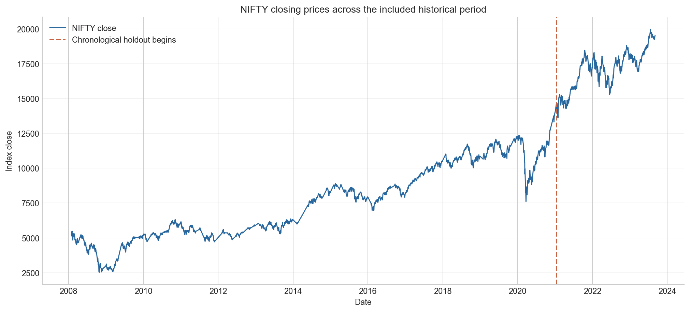
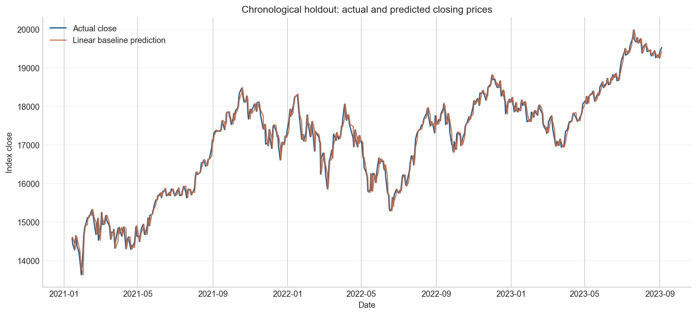

The question and the boundary
Can prior closing-price history estimate a later recorded close? This project answers only that historical, one-step level-forecast question. It does not create a trade, recommendation, return forecast, or investment claim.
Scope of the included data

The dashed line marks the start of the later-date holdout. The data is a local educational CSV, not a trading-grade market feed.
| Property | Value |
|---|---|
| Input | data/NSEI.csv with Date, OHLC, Adjusted Close and Volume fields |
| Prediction target | Recorded Close on day t |
| Training window | 2008-01-29 to 2021-01-13 |
| Holdout window | 2021-01-14 to 2023-09-04 |
What the model can know
Every input is shifted by one row. The first 20 rows are removed because a full 20-day past window does not yet exist; no prices are invented to fill that history.
Close at t−1
Mean of the five preceding closes
Mean of the twenty preceding closes
Model and evaluation
A training-only StandardScaler feeds a linear regression. This intentionally transparent model provides a baseline before any more complex approach is considered.
| Metric | Verified result | Meaning |
|---|---|---|
| MAE | 119.36 index points | Typical absolute miss |
| RMSE | 157.86 index points | Larger misses count more |
| MAPE | 0.71% | Average relative close-level error |
See the full holdout, not one headline number

The baseline closely follows the historical price level; that visual similarity is not a trading result.
A smooth, high-valued series can make next-level predictions look precise while still missing return direction, transaction costs, uncertainty and regime breaks. A serious strategy study would need an explicit signal, position rules, costs, walk-forward retraining, drawdown analysis and an unnormalised naïve benchmark.
Reproduce and verify
python -m pip install -r requirements.txt python -m src.train python -m pytest -q python -m scripts.generate_figures
The tests protect lag timing, chronological split ordering, metric arithmetic and the project-relative data path. Read the README for the full project guide.